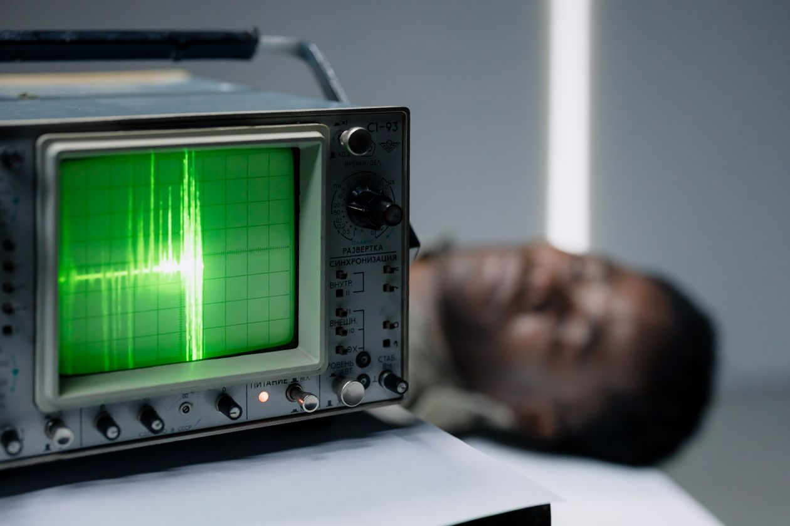

Sheet 03 · About & method
The engineer, and the working method
Trained in signal processing, seasoned in other people's EEG laboratories. The method below is the same whether the client is a university group or an assistive-technology team — because the artefacts do not care who is paying.
The short version
Kraków · since 2019Marta Kowalczyk took a master's in biomedical signal processing and then spent six years as the person EEG laboratories called when the data misbehaved — the audit before submission, the pipeline that had to run in real time, the dataset nobody wanted to open twice.
The independent practice, founded in 2019, does that one thing for research groups and assistive-technology teams: it makes scalp-EEG data trustworthy, and it writes down exactly how trustworthy, and where the trust runs out. The work is deliberately narrow. Non-invasive recordings only. Engineering only — no diagnosis, no treatment, no clinical claims of any kind, and a standing refusal, printed below, to dress the work up as anything else.
The notebook habit on these pages is not a costume. Every engagement keeps a lab notebook — settings, decisions, rejected epochs and the reasons — and the notebook is part of the deliverable. If a result cannot be traced back through it, the result is not delivered.

The method, in plain words
Four steps, no mysteries-
M1Sampling
EEG is recorded as a stream of numbers, hundreds of times a second — typically 250 to 1,000 samples per second in research work. The rule underneath is Nyquist's: sample at least twice as fast as the fastest thing you claim to measure, or faster signals fold back into your data wearing disguises. The sampling rate is chosen from the science question, written in the protocol, and never quietly changed mid-study.
-
M2Filtering
Filters keep the frequency ranges a study cares about and remove the rest — slow drift below, mains hum and muscle above. Every filter also edits the signal it keeps, shifting timing and shaving peaks, so filter settings are part of the methods section, not a default nobody remembers choosing. A notch filter for mains hum is the last resort, after contact and grounding have been fixed at the source.
-
M3Epoching
A continuous record is cut into epochs — short windows locked to events: a flash, a tone, a response. Epoching is where timing honesty lives. If the markers are wrong, every average built on them is wrong in the same direction, which is why acquisition pipelines log sample counters and flag gaps instead of letting them pass silently (Case File 03 is the cautionary tale).
-
M4Artefact rejection
The step that decides everything. Blinks, muscle, movement and mains are identified — by eye channels, by component analysis, by thresholds set in advance — and the contaminated epochs are rejected or corrected under rules written down before the results are seen. The rejection count is reported with the results. A pipeline that rejects nothing has not cleaned the data; it has declined to look.
Ethics, consent, and the refusals
Printed at full size, on purposeEthics & consent practice
Ethics approval for any study sits with the client institution's ethics board — never with this practice, and no engagement starts until the client confirms approval is in place. Consent is the laboratory's own process with its participants; the engineer is not in the room and does not hold consent records.
Data handling follows from that: recordings are worked on under the client's data agreement, identifiable data is never kept longer than the engagement requires, and datasets are returned or destroyed — with the destruction noted in the notebook — at handover. Audit findings are reported to the client in writing, including the unwelcome ones. Especially the unwelcome ones.
What this practice will not do
- No “mind reading”. EEG does not read thoughts, and the phrase is refused wherever it appears — including in a client's own draft copy.
- No medical claims. No diagnosis, no treatment, no screening. Anything clinical belongs to clinicians and their regulators.
- No consumer “focus” gadgets. No headband scores, no attention metrics for sale, no wellness grading of brains.
- No invasive work. Nothing implanted, nothing intracortical. Scalp recordings only.
- No silent fixes. If the data says the effect is an artefact, the report says so — before submission, not after.
Engagement terms
The same for every client- Scoped in writing. Every engagement starts from a written scope: data, channels, deliverables, and what is explicitly out.
- Audits are fixed-fee. The fee is set from dataset hours before the files are opened, and it does not change with what the audit finds.
- A pilot precedes real-time work. A short paid pilot on recorded data comes before any real-time build is quoted.
- Staged payments on projects. Tied to notebook checkpoints, so the written record and the money move together.
- Two engagements at a time. The register on the Index sheet shows the current book, honestly, including when it is full.
- The notebook is delivered. Settings, decisions and rejection logs are part of every handover, not an extra.